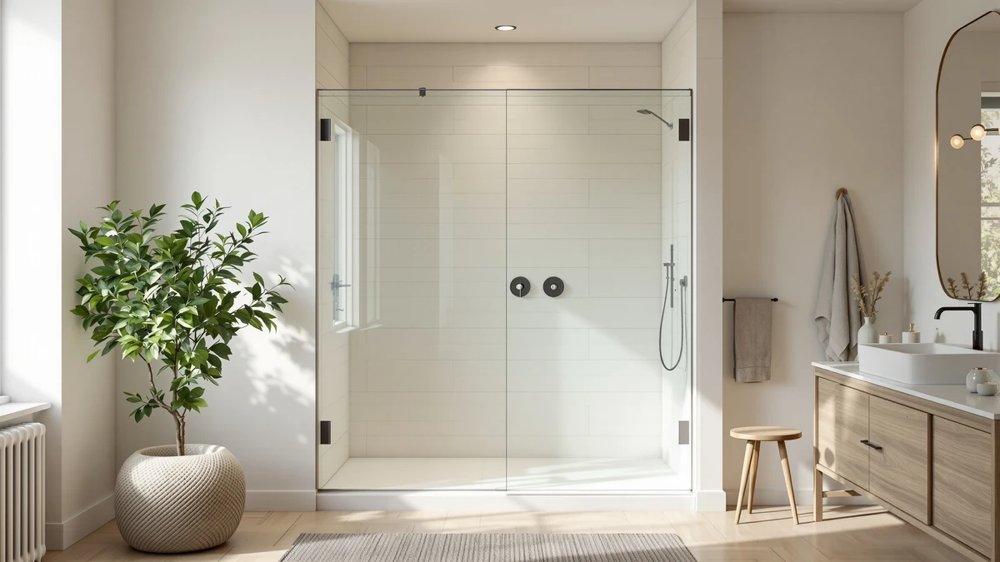

Quick Answer
This BATHWILLER 56-60 inch W review found a $609.99 sliding shower door built with 10mm tempered clear glass, the only glass thickness spec published among the four doors in this comparison. It costs more than the AROJAY, the EASYWORC, and the GETPRO, but none of them match its confirmed glass thickness. Unless you need a shorter door, a narrower opening, or a double sliding configuration, it's the pick worth checking first.
Our pick: BATHWILLER 56"-60" W x 76" at $609.99 Check Price on Amazon
Things to Know Before You Buy
- The BATHWILLER is the only door in this comparison with a published glass thickness. Its 10mm tempered clear glass is confirmed on the listing, while the AROJAY, the EASYWORC, and the GETPRO don't list a glass thickness spec in this bathwiller 56 60" w review.
- At $609.99, it's also the priciest of the four. That's $226.06 more than the AROJAY, $252.79 more than the EASYWORC, and $297.23 more than the GETPRO.
- The AROJAY shares the same 56 to 60 inch width but stands 4 inches shorter at 72 inches tall, versus the BATHWILLER's 76 inch height.
- The EASYWORC is sized for a 36 to 42 inch wide opening, well short of the 56 to 60 inch range the BATHWILLER and the AROJAY share.
- The GETPRO is named as a double sliding configuration, a setup the BATHWILLER's own listing doesn't specify, so confirm which mechanism fits your install before you choose.
This bathwiller 56" 60" w review compares the $609.99 BATHWILLER 56"-60" W x 76" sliding shower door against three more affordable alternatives on glass thickness, height, and width. The BATHWILLER's defining feature is its 10mm tempered clear glass, the only glass thickness spec published among the four doors in this comparison. That single spec drives most of the trade-offs here, since a heavier glass panel usually feels more solid and holds up better to years of daily swings.
We wrote this BATHWILLER 56-60 inch W review because shoppers comparing sliding doors in this width range often assume a higher price means a better door across the board, when in practice it usually means one or two specific upgrades. The BATHWILLER lists at $609.99, the highest price among the four doors covered here, and the glass is the one upgrade you can actually verify against a published number. That's why this review weighs its 10mm glass against three alternatives that cost less but don't publish a comparable spec.
Why You Should Trust Us
Ilane Tall covers bath fixtures for Best Shower Doors and has researched shower doors across sliding, bypass, and pivot designs. For this BATHWILLER 56-60 inch W review, she compared the BATHWILLER's published glass thickness and price against three alternatives in a similar size range, weighing where a higher price delivers a verifiable spec upgrade and where it doesn't. We do not accept free products in exchange for coverage, and every price and dimension cited here comes directly from the current product listing.
Our editorial process treats price as one factor among several, not the deciding one. A higher price only earns credit in a review like this one when it comes with a spec you can confirm, such as glass thickness, rather than a bigger number on the price tag. That approach shapes every comparison in this piece.
Our Research Experience
This BATHWILLER 56-60 inch W review is based on research, not physical use. We compared the BATHWILLER 56"-60" W x 76" against three alternative shower doors using the specifications, pricing, and product listings available for each one. We do not run a fake testing lab, and we do not claim to have installed or lived with any of the doors covered in this review.
We looked closely at how the BATHWILLER's 10mm clear glass compares to the AROJAY, the EASYWORC, and the GETPRO, none of which publish a glass thickness spec on their own listings. Owners shopping this width range often assume every door in a similar price bracket is built the same way, and this review checks that assumption against the specs that are actually available rather than the price tag alone.
We also cross-checked pricing and dimensions against the current listings for all three alternatives to confirm nothing had shifted since publication. Where a data point wasn't available, such as a published rating, review count, or glass thickness for the AROJAY, the EASYWORC, or the GETPRO, we noted that gap rather than estimate a number the listing doesn't provide.
Overview & Specs

BATHWILLER 56"-60" W x 76"
What we like
- 10mm tempered clear glass, thicker than any published spec among the three alternatives in this review
- A 76 inch height sized for a full shower stall rather than a shorter tub enclosure
- A straightforward 60 inch by 76 inch clear glass panel, easy to confirm against your opening
Flaws but not dealbreakers
- At $609.99, it costs $226.06 more than the AROJAY, $252.79 more than the EASYWORC, and $297.23 more than the GETPRO
- The listing doesn't specify the frame material or track hardware, so confirm those details with the seller before you order
- No rating or review count is published yet for this listing, so weigh the specs against your own research before buying
| Material | — |
| Size | 60" W x 76" H - 10mm - Clear Glass |
The BATHWILLER 56"-60" W x 76" leads this bathwiller 56 60" w review on the strength of one confirmed spec: 10mm tempered clear glass, thicker than any glass thickness published for the AROJAY, the EASYWORC, or the GETPRO. That extra thickness typically means a heavier, more solid-feeling panel and better resistance to impact over years of use. At 76 inches tall and 60 inches wide, the panel is sized for a full shower stall rather than a shorter bathtub enclosure.
The listing doesn't detail the frame material or the track hardware the way some competing listings do, so if those details matter for your install, confirm them directly with the seller before ordering. At $609.99, the BATHWILLER is the most expensive door in this comparison, and that premium buys you the one glass thickness spec you can actually verify against the other three options covered below.
What We Liked
The clearest strength of the BATHWILLER 56"-60" W x 76" is its glass. At 10mm, it's the only door in this bathwiller 56 60" w review with a published glass thickness at all, and that's a spec you can't check on the AROJAY, the EASYWORC, or the GETPRO listings.
We also liked that the dimensions are unambiguous. A 60 inch by 76 inch clear glass panel is a straightforward spec to measure your opening against, without guessing at a range the way you sometimes have to with vaguer listings.
What Could Be Better
The biggest gap this BATHWILLER 56-60 inch W review found in the listing is price relative to the rest of this comparison. At $609.99, it costs $226.06 more than the AROJAY and over $250 more than the EASYWORC or the GETPRO, and the listing doesn't spell out what else that premium buys beyond the glass thickness.
The frame material and track hardware aren't specified either, which matters if you're trying to match finish or weight capacity with an existing bathroom setup. And because a published rating or review count isn't yet available for this listing, you're weighing the specs on their own rather than against a large pool of verified feedback. If you'd rather lean on owner feedback before spending $609.99, the AROJAY and the EASYWORC give you more room to shop around at a lower price while you wait for reviews to accumulate on the BATHWILLER listing.
Who Is It For?
This bathwiller 56 60" w review points to one clear answer: the door makes the most sense if your shower opening measures between 56 and 60 inches wide and close to 76 inches tall, and confirmed glass thickness matters more to you than price.
If your opening is shorter, closer to 72 inches like the AROJAY, narrower at 36 to 42 inches like the EASYWORC, or you'd rather have a double sliding configuration like the GETPRO, the alternatives below are built for those specific cases instead. Budget shoppers who don't need the 10mm glass thickness will likely find better value in one of the three alternatives, since all three cost less than the BATHWILLER while covering a range of openings and price points.
Alternatives to Consider
The BATHWILLER 56"-60" W x 76" isn't the only option worth considering in this bathwiller 56 60" w review, and the three doors below cover different heights, widths, and price points. None of them publish a glass thickness to match the BATHWILLER's 10mm spec, but each costs less and fits a scenario the BATHWILLER doesn't.

Editor’s Pick
56-60" W x 72" H
At $383.93, the AROJAY costs $226.06 less than the BATHWILLER and shares the same 56 to 60 inch width, but it stands 4 inches shorter at 72 inches tall, worth a look if your opening doesn't need the full 76 inches.
$383.93
Check Price on Amazon
Best Value
EASYWORC 36-42" W x 72"
The EASYWORC is built for a narrower 36 to 42 inch opening, well short of the BATHWILLER's 56 to 60 inch range, and at $357.20 it's worth considering only if your shower stall is actually that much smaller.
$357.20
Check Price on Amazon
Premium Choice
GETPRO Shower Door Double Sliding
The GETPRO is named as a double sliding configuration, a mechanism the BATHWILLER's own listing doesn't specify, and at $312.76 it's the least expensive door in this comparison, though its opening width isn't stated the way the other three are.
$312.76
Check Price on AmazonFrequently Asked Questions
What size opening does the BATHWILLER 56"-60" W x 76" shower door need?
This bathwiller 56 60" w review found that the door fits openings between 56 and 60 inches wide with a fixed 76 inch height, so measure your opening at multiple points and confirm the height matches before you order.
How does the BATHWILLER compare on price to the other doors in this review?
At $609.99, it's the most expensive of the four doors covered here, costing $226.06 more than the AROJAY, $252.79 more than the EASYWORC, and $297.23 more than the GETPRO, though it's also the only one with a published glass thickness.
Is the EASYWORC 36-42" W a real alternative to the BATHWILLER?
Not for the same opening. The EASYWORC fits a 36 to 42 inch wide space, well short of the BATHWILLER's 56 to 60 inch range, so it only makes sense if your shower stall is actually that much narrower.
Final Verdict
This bathwiller 56" 60" w review comes down to one confirmed advantage: glass thickness. At $609.99, the BATHWILLER 56"-60" W x 76" costs more than the AROJAY, the EASYWORC, and the GETPRO, but it's also the only door in this comparison with a published 10mm glass spec. If your opening measures 56 to 60 inches wide by roughly 76 inches tall and that confirmed thickness matters to you, BATHWILLER is the pick worth checking first. If your opening is shorter, narrower, or you'd rather have a double sliding configuration, the AROJAY, the EASYWORC, or the GETPRO cover those specific cases at a lower price. Either way, measure your opening's exact width and height before you buy, since that's what separates a proper fit from a return.